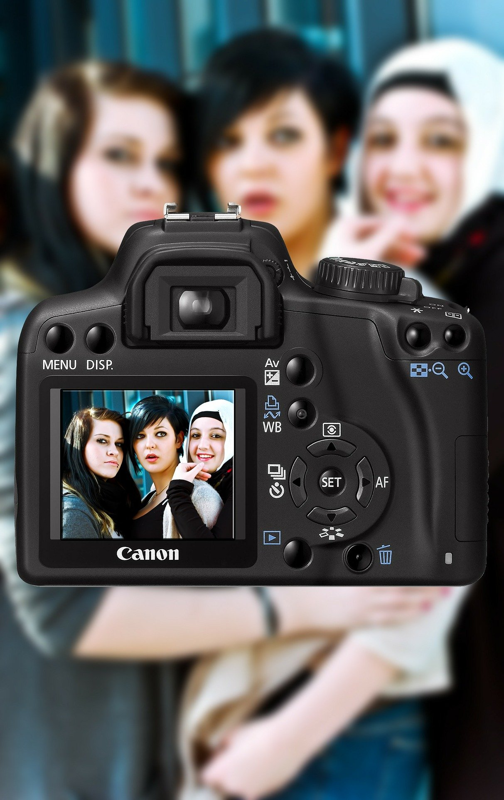

Patreon
Si estas interesado en aprender Fotografía, te invito a que hagas parte de mi Comunidad en Patreon, donde vas a encontrar videos exclusivos y aprenderás mucho mas a fondo sobre este oficio
Academia
Si estas interesado en clases presenciales solo en medellin o en clases virtuales sobre diferentes temas y niveles como fotografia basica y/o avanzada, revelado de imagenes en light room o edición de fotografias en Photoshop.
